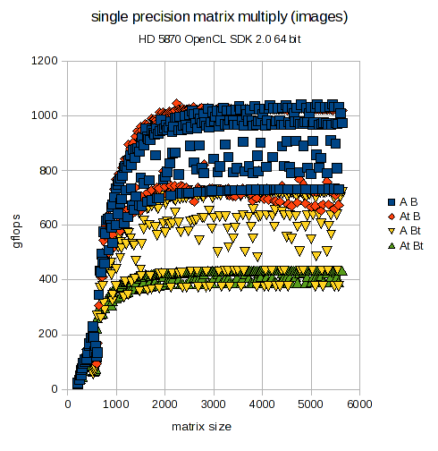
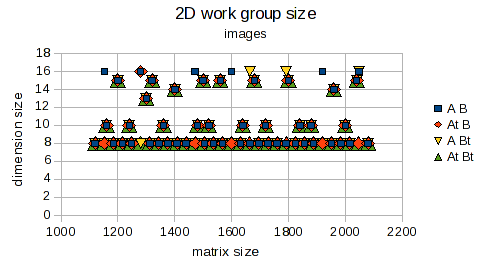

| Chris Jang | |||||||||||||||||||||||
f |
a |
s |
t |
k |
o |
r |
( |
a |
t |
) |
g |
m |
a |
i |
l |
( |
d |
o |
t |
) |
c |
o |
m |
For the past few months, I've been playing with the ATI OpenCL SDK version 2.0 using a HD 5870 on Ubuntu 9.04 64 bit. The first problem is single precision matrix multiply (including the general level 3 BLAS operation SGEMM). This experience taught me a lot about the current state of GPGPU technology using OpenCL.
The good: OpenCL is capable of good performance. While slower than hand crafted IL/ISA (assembly language), it is easier to automatically tune and optimize. In my opinion, this is also the primary advantage of the LLVM-based OpenCL compiler. It facilitates generating kernels dynamically and combinatorially searching a design space to find good solutions. A static compiler would make automated optimization more difficult.
The bad: Extensive optimization may be required. There is a performance penalty for using OpenCL instead of IL/ISA which necessitates optimization even more. It is (still) difficult to write good kernels from first principles. Improving performance is often trial and error to find the right way to parameterize a kernel implementation. This means the automatic part of the optimization is really only auto-tuning.
The ugly:
Runtime metaprogramming is required. Good performance requires exploring a design space of kernel implementations. This leads to an internal DSL (domain specific language) for generating the procedural OpenCL kernel source code. It is a wheel that must be re-invented with great effort. OpenCL may be portable GPGPU. However, significant device specific optimization is required. This is very much non-trivial.
What does GATLAS do right now?
It finds OpenCL matrix multiply kernels with good performance. Hand crafted optimization is unlikely to best the generated kernels without resorting to assembly language.
Out of the box, GATLAS is effectively an auto-tuning benchmark that can characterize the performance of a GPU and OpenCL SDK combination. Most other performance benchmarks are extensively hand-tuned for specific GPU models. It is difficult to know how much performance is the result of human skill and how much is faster hardware or better drivers. As GPUs are "idiosyncratic" devices, the same kernel and runtime settings can exhibit drastically different performance.
Can I use the fast kernels found by GATLAS to speed up my numerical application?
Yes - If you have an application that benefits from a fast matrix multiply (or SGEMM) GPU kernel.
A more careful answer is that GPGPU is not a drop-in technology for legacy applications designed for CPUs. Using a GPU effectively requires careful scheduling of work between CPU host and GPU device to minimize PCIe bus data transfer costs. Consequently, a GPU math kernel is not really the same as a CPU math kernel in an optimized library.
The usual thinking (at least what I thought initially) is the following.
I see GPGPU and OpenCL as a very significant technology. But it requires significant re-thinking of how applications work. It requires design with GPGPU in mind and does not bolt-on. Too make an analogy, the change from desktop to web applications was the same way. Everything changed, from languages to architecture and design. It required a generational shift in software engineering culture. I see the relationship between CPU and GPGPU technology in a similar way.
Example problem of single precision matrix multiply
Here is single precision matrix multiply performance after optimization. Transposing input matrices A and B affects performance primarily due to changes in the memory access pattern. Note there are no linear algebra transformations (e.g. transpose(A) * transpose(B) is not calculated as transpose(B * A)). SGEMM performance is very similar and only slightly slower (as expected). On the HD 5870, memory buffers are relatively slow (no cache) while the texture units are fast (L1 cache). That is why the image based kernel implementation is much faster than the one using memory buffers.
| |
 |
| 490 GFLOPS at 5440x5440 for A * Bt | 1045 GFLOPS at 2240x2240 for At * B |
Here is the best work group size and inner blocking height found for some matrix sizes. The memory buffer kernel benefits the most from optimization. Auto-tuning finds significantly faster solutions. For the image kernel, optimization is more about avoiding inherently slow matrix sizes and parameters. Note there are additional kernel parameters not shown here. These affect the inlining of matrix dimensions, inner product loop order and use of global versus group/local work item IDs.
 |
 |
 |
 |
The system was developed organically over several months with many rewrites. I would like to believe the design does not subscribe to any one ideological ethic except practicality. I tried to find reasonable compromises between consistency, flexibility and understandability. In my experience, the best design is an optimal balance that avoids going too far in any direction. As I see it, there are naturally six major conceptual parts.
| calculation with A and B as: | memory buffers | images |
| C = op(A) * op(B) | KernelMatmulBuffer | KernelMatmulImage |
| C = alpha * op(A) * op(B) + beta * C | KernelGenMatmulBuffer | KernelGenMatmulImage |
where A is M x K, B is K x N and C is M x N.
Each of these kernel variants accepts these inputs:
From the viewpoint of the auto-tuning optimization, these eight inputs are split into two groups. The first group determines the domain of the optimization space. The second group determines the range. For every specified point in the domain, the auto-tuning should find an optimal solution point in the range. Together, the two points comprise the eight inputs required to generate an OpenCL matrix multiply kernel. If the solution point is optimal, then that kernel specialization should have good performance as the cost function is empirical timings of performance on the GPU.
| inputs in optimization domain | outputs in optimization range |
| for specific values of these five... | ...find optimal values of these three |
|
|
Transposing A and B is specified at construction of the four C++ classes corresponding to the major kernel variants. This accounts for the first two optimization inputs. The other three inputs are passed to member function KernelBaseMatmul::parameters(M, N, K) which returns a collection. This collection accounts for the three optimization outputs. It contains all of the combinations to benchmark. Each combination is all eight values, the specified five inputs along with possible values for the remaining three output parameters.
To find an optimal combination, all we must do is run a benchmark test with each one and record the time. The combination resulting in the shortest time is the winner. This combination of parameters is selected as optimal. As mentioned earlier, the optimization must exploit some inherent structure in the problem for practical efficiency. Brute force testing of kernel specializations over many trials (variance in timings can be large) is expensive.
Differences between the four major matrix multiply variants
Two simple differences directly affect performance.
Image based kernels do not have to worry about most of this. Inner blocks are sampled directly from images (a texture) directly into register variables and then accumulate the inner product. The L1 cache is handled automatically by the hardware.
Note: The underlying matrix data layout is not different between memory buffer and image based kernels. They layout is always row major (not transposed) and column major (transposed). Memory buffers and images are just different ways to access that data in memory.
Important functions for matrix multiply
There are two functions I consider to be at the heart of the design. It may be easier to understand the system if they are pointed out directly.
As described earlier, given eight values, an OpenCL kernel may be generated. What I didn't say earlier is that the eight values must be valid. The function KernelBaseMatmul::validateParams has the predicates determining valid from invalid points in the optimization space.
// validate kernel parameters
bool KernelBaseMatmul::validateParams(const size_t M,
const size_t N,
const size_t K,
const size_t groupSize,
const size_t blockHeight,
const size_t extraParam) const {
return
// work group size
groupSize >= 1 && // allow small work groups (will be slow)
groupSize <= maxGroupSize(M, N, K) && // limit group size to avoid kernel hangs
// inner blocking height
blockHeight >= 1 && // allow short inner blocks (will be slow)
blockHeight <= maxBlockHeight() && // limit block height to avoid kernel hangs and for speed
// all matrix dimensions must be a multiple of VECTOR_LENGTH
0 == M % VECTOR_LENGTH &&
0 == N % VECTOR_LENGTH &&
0 == K % VECTOR_LENGTH &&
// check for blocking compatible with matrix dimensions
0 == N % (groupSize * blockWidth()) &&
0 == M % (groupSize * blockHeight) &&
0 == K % (groupSize * VECTOR_LENGTH) &&
groupSize * blockWidth() <= N &&
groupSize * blockHeight <= M &&
groupSize * VECTOR_LENGTH <= K &&
// extra parameter
extraParam < numberExtraParam() &&
validExtraParam();
}
Benchmark timings are eventually performed in a single function Bench::run. This is straightforward. Note that gettimeofday is used instead of any more accurate platform specific timer calls. I have not had troubles with the POSIX function call so opted for portability.
// returns elapsed time in microseconds, 0 if error size_t Bench::run(const size_t numTrials, const vector& args, const bool printDebug) { // kernel parameter arguments _kernel.setParams(args); if (_printStatus && printDebug) cerr << _kernel << endl; // kernels change depending on arguments if (_printStatus) cerr << "rebuilding kernel..."; rebuildProgram(); if (_printStatus) cerr << " done\t"; // set kernel arguments if (!_kernel.setArgs(_oclApp, _kernelHandle)) return 0; // fail // work item dimensions const vector globalDims = _kernel.globalWorkItems(); const vector localDims = _kernel.localWorkItems(); // start gettimeofday timer struct timeval start_time; if (-1 == gettimeofday(&start_time, 0)) { if (_printStatus) cerr << "error: start gettimeofday" << endl; return 0; // fail } // execute kernel for specified number of trials int waitKernel; for (size_t i = 0; i < numTrials; i++) { if (0 == i) // first enqueued kernel waitKernel = _oclApp.enqueueKernel(_kernelHandle, globalDims, localDims); else // subsequent enqueued kernels depend on previous one waitKernel = _oclApp.enqueueKernel(_kernelHandle, globalDims, localDims, waitKernel); if (-1 == waitKernel) { if (_printStatus) cerr << "error: enqueue kernel " << i << endl; if (0 != i && !_oclApp.wait()) // blocking call if (_printStatus) cerr << "error: waiting for " << (i-1) << " enqueued kernels" << endl; return 0; // fail } } // wait for all kernels to finish if (!_oclApp.wait(waitKernel)) { // blocking call if (_printStatus) cerr << "error: waiting for all kernels" << endl; return 0; // fail } // stop gettimeofday timer struct timeval stop_time; if (-1 == gettimeofday(&stop_time, 0)) { if (_printStatus) cerr << "error: stop gettimeofday" << endl; return 0; // fail } // calculate elapsed time in microseconds const size_t elapsed_time = 1000 * 1000 * ( stop_time.tv_sec - start_time.tv_sec ) + stop_time.tv_usec + (1000 * 1000 - start_time.tv_usec) - 1000 * 1000; // allow kernel to check results, sometimes bad kernels do nothing const bool isOk = _kernel.checkOutput(_oclApp, printDebug); // final cleanup if (!_oclApp.wait()) { if (_printStatus) cerr << "error: clean up wait events" << endl; } return isOk ? elapsed_time : 0; }
[cjang@thinker gatlas]$ echo $ATISTREAMSDKROOT /opt/ati-stream-sdk-v2.0-lnx64/ |
make |
make benchgemmimage |
make benchmmbuffer |
make benchall |
make chart |
For very detailed benchmarking that takes into account PCIe bus data transfer costs, you can run
make fullbenchgemm |
./chartMatmul fullbenchdata gemm > fullbench_gemm.chart |
./bgemm_image -d gpu -n 3200 -t 10 |
SGEMM using images on the 1st GPU device for 3200x3200 with 10 trials |
./bgemm_buffer -d gpu -n 1024 -t 5 -w 3 |
SGEMM using memory buffers on the 1st GPU device for 1024x1024 with 5 trials and keeping the 3 best |
./bmm_image -d gpu1 -m 4800 -n 4000 -k 2048 -t 10 -w 10 -a -b |
matrix multiply using images on the 2nd GPU device for rectangular matrices with 10 trials and keeping the 10 best, matrices A and B are transposed |
./bmm_buffer -d cpu -n 1600 -t 10 -b -e |
matrix multply using memory buffers on the 1st CPU device for 1600x1600 with 10 trials, matrix B is transposed, use faster nested optimization |
Status messages are printed ss the auto-tuning proceeds. When the benchmark has finished, the final output looks something like the following. ( Output from: ./bgemm_image -d gpu -n 5120 -t 10 -w 3 -a -e )
[0] 2669300 usec avg: 1005.84 stddev: 2.47614 5120 5120 5120 8 4 0 argsMNK jkl [1] 2671205 usec avg: 1005.12 stddev: 1.67477 5120 5120 5120 8 4 10 inlineMNK klj [2] 2677526 usec avg: 1002.76 stddev: 3.2374 5120 5120 5120 8 4 5 argsMNK lkjThe best kernel ran for 2669300 microseconds over ten trials. The average GFLOPS rate was 1005.84. Note this is calculated as the average of the rates for each trial. This can be slightly different than the average over all trials taken together. The standard deviation is 2.47614. The matrix dimensions are M = 5120, N = 5120 and K = 5120. The best work group size is 8. The best inner blocking height is 4. The best extra parameter is 0 which corresponds to matrix dimensions passed as kernel arguments with an inner product accumulation loop order of jkl.
The options "-p" (paranoid check) and "-z" (print output) are not needed for benchmarking. They are for development. The paranoid check validates correctness of the kernel using random matrix data. Normally, benchmarks use a simple test input pattern of 1's as it simplifies validation of each benchmark trial. Note that I believe the kernels are correct because they pass the paranoid check on a HD 5870 GPU. However, I have seen failures on a Core i7 CPU. In this case, I trust the GPU results more than the CPU output. - An important lesson learned is not to assume numerical calculations are correct until verified as they may be dependent on the device, driver and SDK.
How to print generated kernel source
There are four printing tools: pgemm_buffer, pgemm_image, pmm_buffer, pmm_image. All share the same command line options. To see them, just use "-h". The eight parameters that determine a kernel must all be specified: is A transposed, is B transposed, M, N, K, group size, block height, extra parameter.
For example, let's say we wish to print the kernel corresponding to the best kernel in the example above. Then we would just run
./pgemm_image -n 5120 -a -g 8 -y 4 -x 0 |
Bellevue, WA, May 12 2010